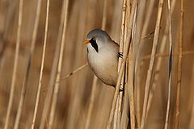
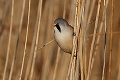

| Bearded Reedling | |
|---|---|
|  | |
| Adult male | |
| Conservation status | |
| Binomial name | |
| Panurus biarmicus (Linnaeus, 1758) |
| Bearded Reedling | |
|---|---|
|  | |
| Adult male | |
| Conservation status | |
| Binomial name | |
| Panurus biarmicus (Linnaeus, 1758) |
The Bearded Reedling, Panurus biarmicus, is a peculiar small passerine bird. It is also frequently known as the Bearded Tit due to some similarities to Long-tailed Tits, or Bearded Parrotbill since it was later placed with these after it was removed from the true tits in the family Paridae. But according to more recent research, it is actually a unique songbird - no other living species seems to be particularly closely related to it. Thus, it seems that the monotypic family Panuridae must again be recognized.
The Bearded Reedling is a species of temperate Europe and Asia. It is resident, and most birds do not migrate other than eruptive or cold weather movements. It is vulnerable to hard winters, which may kill many birds.
This is a small orange-brown bird with a long tail and an undulating flight. The male has a grey head and black moustaches (not a beard). Flocks often betray their presence in a reedbed by their characteristic "ping" call.
This species is a wetland specialist, breeding colonially in large reedbeds by lakes or swamps. It eats reed aphids in summer, and reed seeds in winter, its digestive system actually changing to cope with the very different seasonal diets.
|
Juvenile (top), adult males (center) and adult female (front) |
Flock in natural habitat |
Three males |
Female |

{kind=link}
{kind=link}
{kind=link}
{kind=link}
{kind=link}